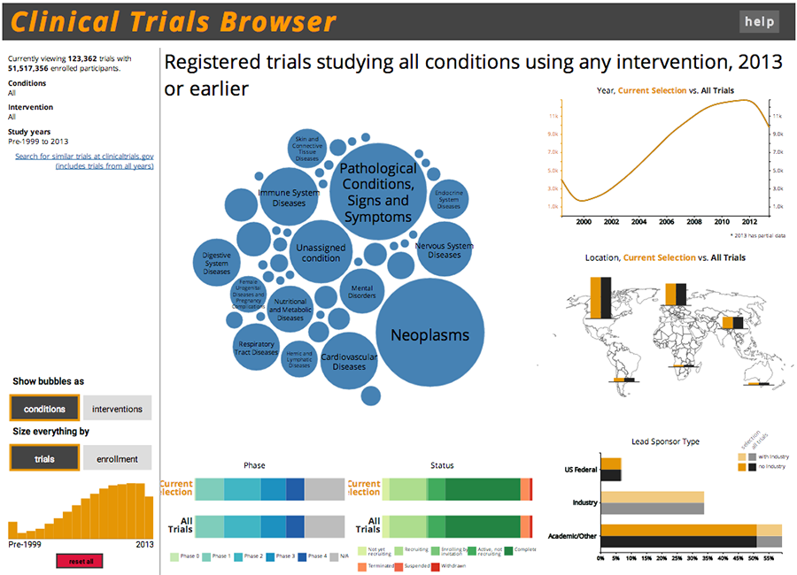
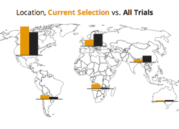

Clinical Trials Browser



This was a group project in Professor Marti Hearst's Information Visualization class. The interface is implemented entirely in D3.js, and uses data collected by the National Institutes of Health at ClinicalTrials.gov and processed by the Clinical Trials Transformation Initiative at Duke University.
The visualization primarily consists of an interactive bubble chart that allows a user to select the condition and/or intervention used in the trials in which they are interested. The surrounding line and bar charts provide a comparison between the clinical trials of interest and all clinical trials in the database. For this project, I was responsible for:
- cleaning, processing, and analyzing data,
- coding the D3.js visualizations and interactions, and
- creating a web page to host the visualization.
For more information, please see the visualization.